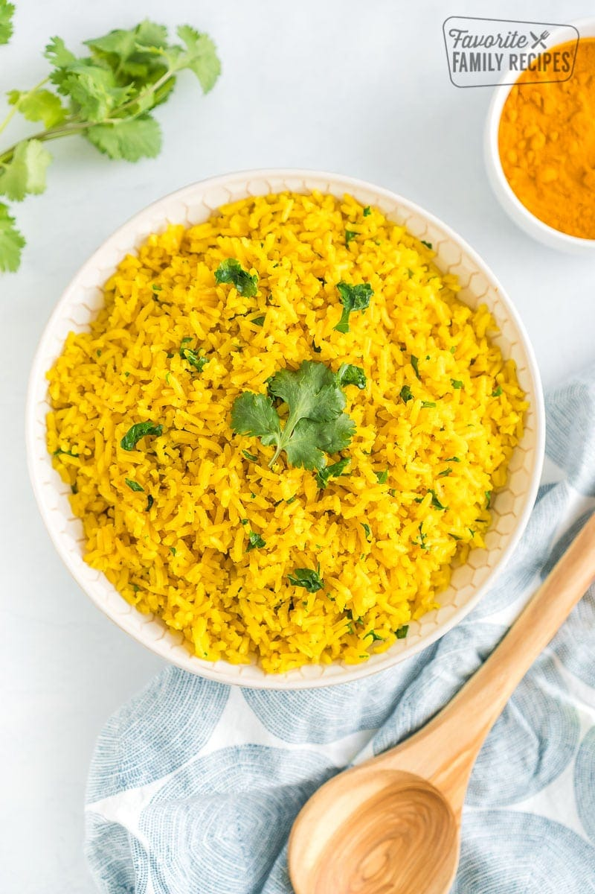

Golden Butter Rice

Description
Golden Butter Rice is a simple yet delicious side dish that pairs perfectly with a wide variety of main courses. The combination of buttery flavor and fragrant spices makes it a crowd-pleaser.
Ingredients
- 1 cup long-grain white rice
- 2 cups chicken or vegetable broth
- 2 tablespoons unsalted butter
- 1/2 teaspoon turmeric powder
- 1/2 teaspoon garlic powder
- 1/4 teaspoon ground cumin
- Salt and freshly ground black pepper to taste
- Fresh parsley, chopped (for garnish)
Steps
- In a medium saucepan, melt the butter over medium heat.
- Add the rice to the saucepan and cook, stirring frequently, until the rice is lightly toasted, about 2-3 minutes.
- Stir in the turmeric, garlic powder, and ground cumin until the rice is evenly coated with the spices.
- Pour in the chicken or vegetable broth and season with salt and pepper to taste. Bring to a boil.
- Reduce the heat to low, cover the saucepan, and simmer for 15-20 minutes, or until the rice is tender and the liquid is absorbed.
- Fluff the rice with a fork and garnish with chopped parsley before serving.
- Enjoy your delicious Golden Butter Rice!